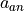
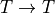

Timeserie Data Model
This process generates a timeserie with an anomaly by using a measured timeserie as input.
Pipeline
Take a timeserie
 measured on a dataset, defined on a set of timestamps
measured on a dataset, defined on a set of timestamps  , and the number of interactions of the anomaly .
, and the number of interactions of the anomaly .Sort the timeserie
in increasing value orderselect the last (highest) values to host anomaly. The set of timestamps for these values is noted
While the sum , do:
Pick a random index
increment the anomaly timeserie at this index
Define ‘normality’ timeserie as
Generate normal timeserie and anomaly timeserie by “shuffling”* and , i.e. define two bijective mappings  (where
is the set of timestamps of the timeseries) and  , such that
, such that
 and
and  TODO : map2 is more constrained than simply this
TODO : map2 is more constrained than simply this